Jirawat
Boonsit
Southern Thai heritage, European technique and the standards of a Michelin Key resort, plated one course at a time.
รากเหง้าอาหารไทยใต้ เทคนิคยุโรป และมาตรฐานรีสอร์ตระดับโลก
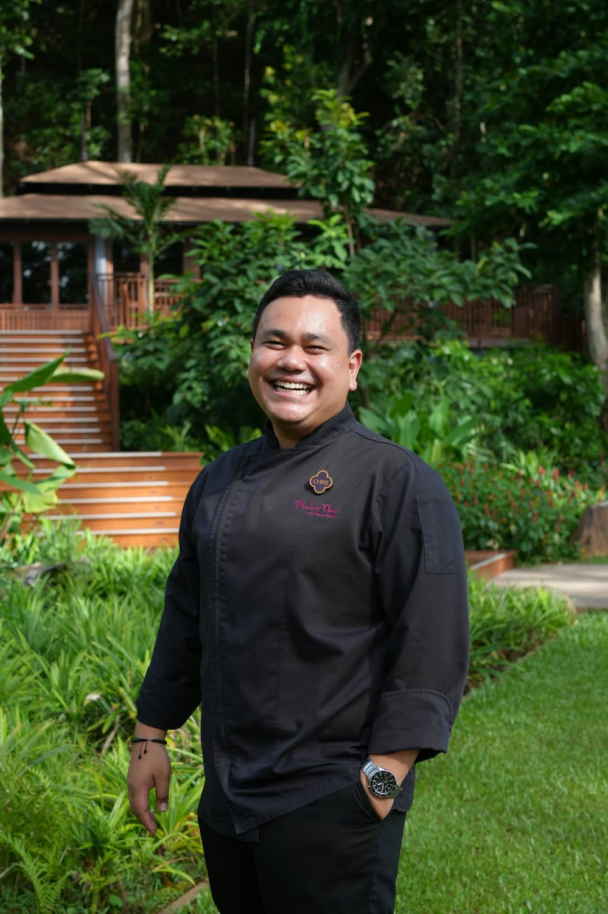
MICHELIN 3 Keys
Phulay Bay, a Ritz-Carlton Reserve, holds the MICHELIN Guide’s highest Key distinction, three years running. I lead its culinary operations, and stepped in as in-charge Executive Chef during part of this period.
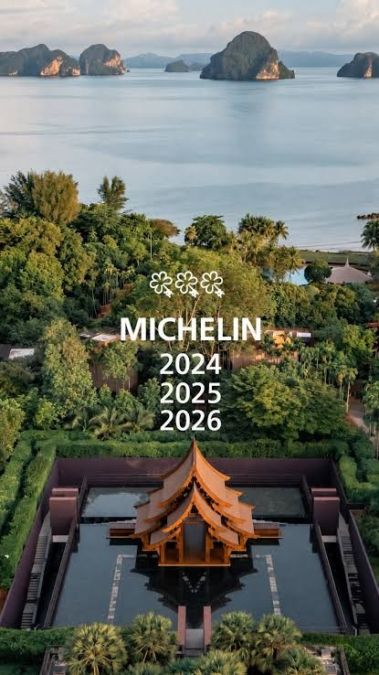
Numbers that follow the plates.
Guest and quality results for Phulay Bay culinary, including the period I led the kitchens without an Executive Chef.
Ranked No. 1 across TCLM properties. YTD 2026, during the period without an Executive Chef.
Ranked No. 3 across TCLM properties. YTD 2026, during the period without an Executive Chef.
Rankings and scores as reported for 2025–2026 in Marriott TCLM and APEC reports.
Preserving heritage while embracing innovation.
I lead culinary teams in ultra-luxury resorts, Michelin-level dining rooms, banquets and private Chef’s Table concepts. My cooking joins refined European technique with the flavors of Southern Thailand, held to luxury hospitality standards.
Along the way I have worked with Ritz-Carlton Reserve, Marriott International and Hyatt Hotels Corporation, and built my own private dining brand in Krabi.
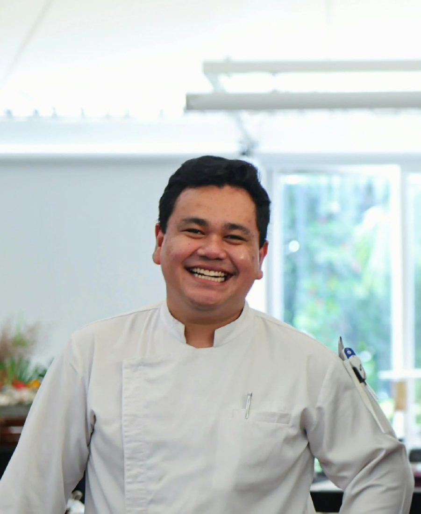
Cooked with restraint. Finished by hand.
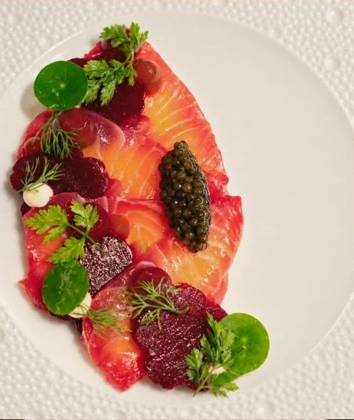
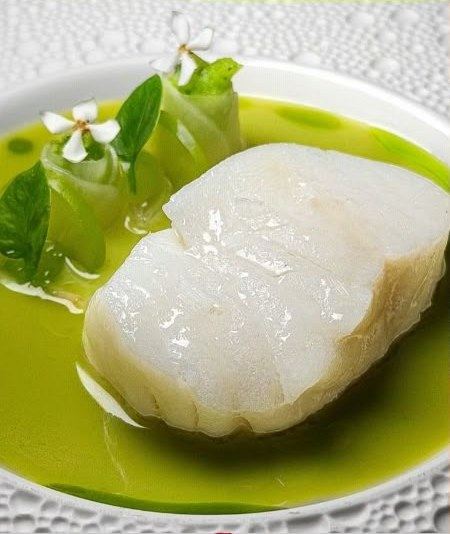
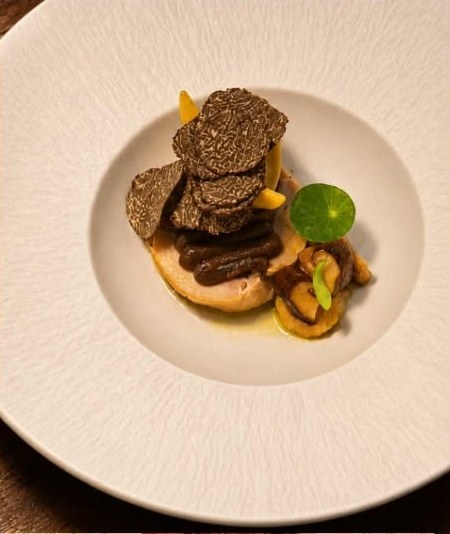
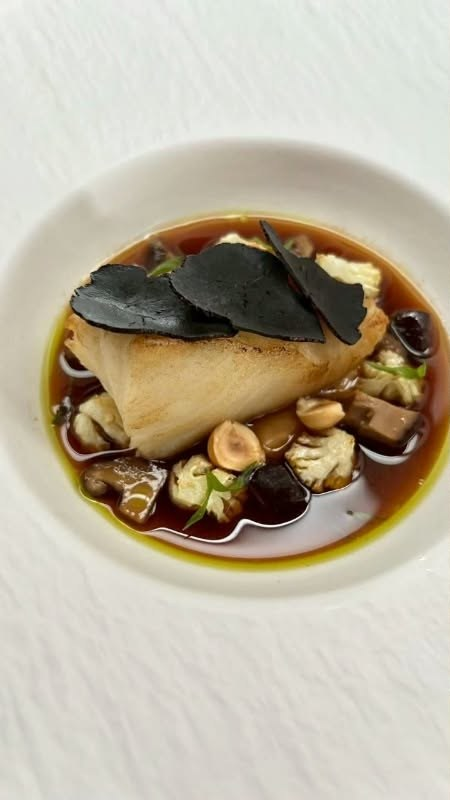
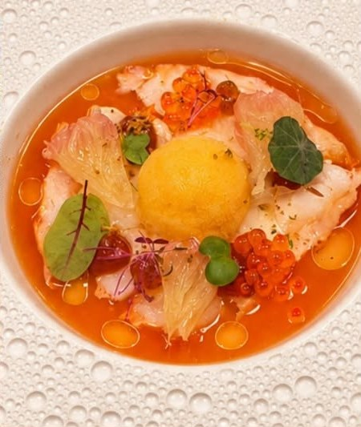
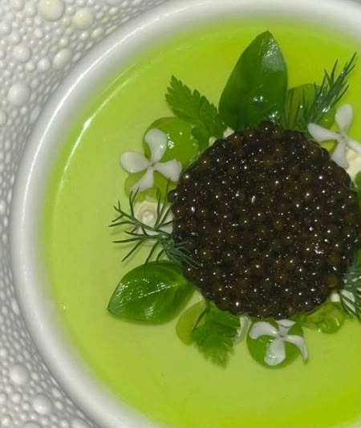
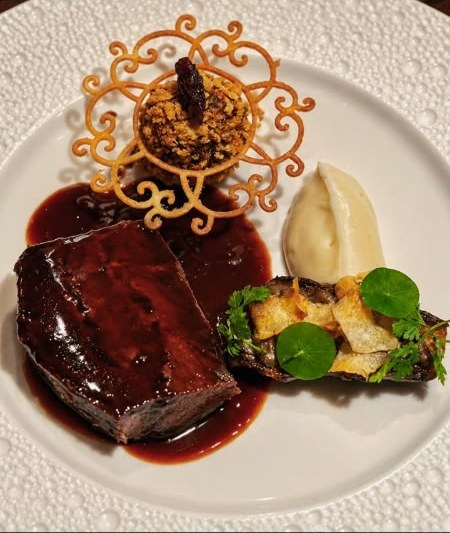
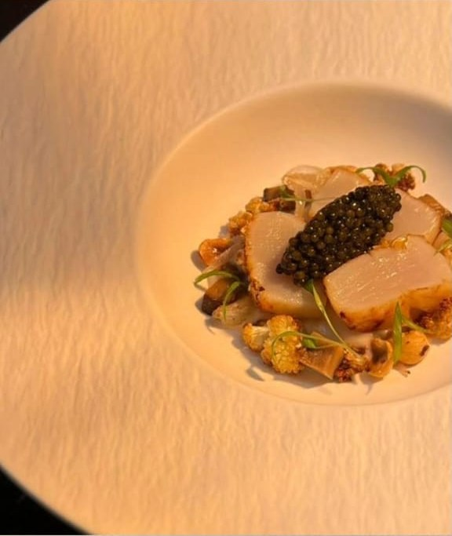
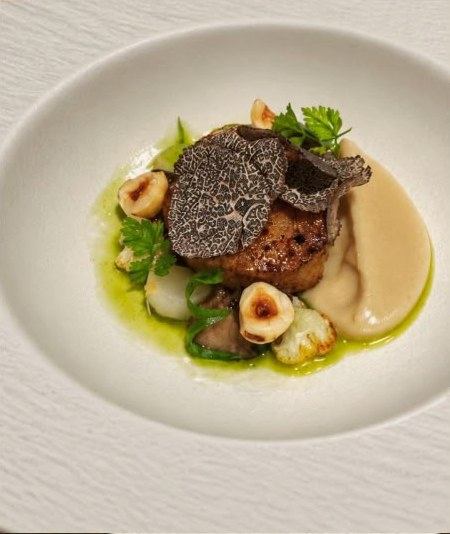
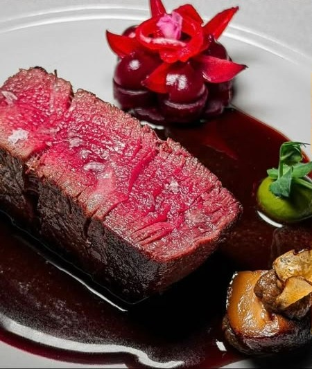
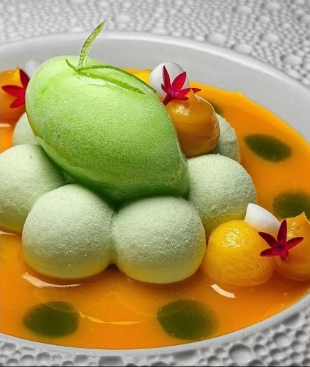
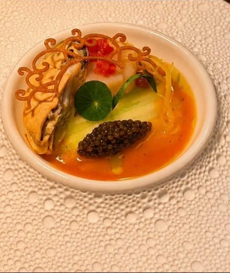
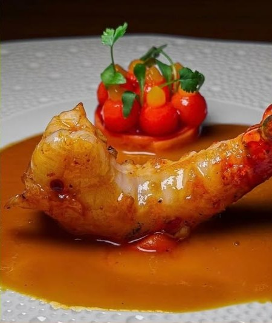
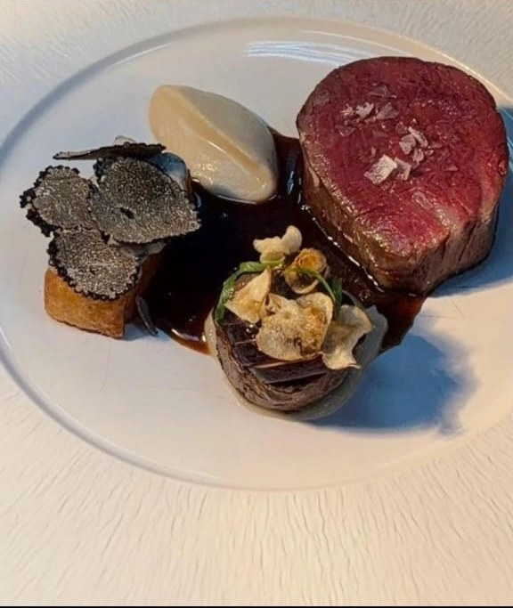
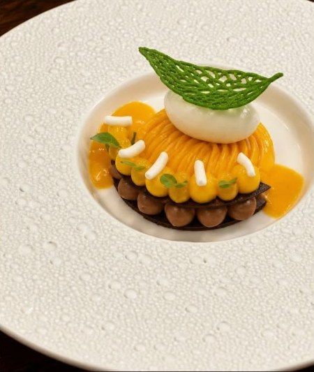
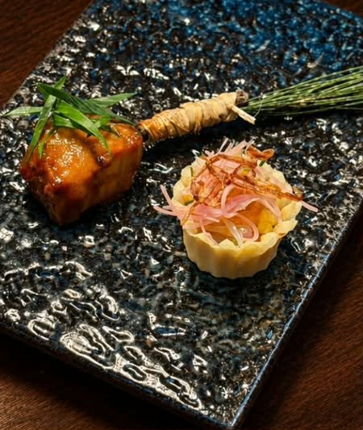
- IEarth & Ember
One of my signature courses.
- IIPearl of Andaman
Inspired by the Andaman coast of Southern Thailand.
- IIIGang Som Pla Gao
Southern Thai sour curry, reimagined as a fine dining course.
- IVSignature Toffee Cake
Homemade toffee cake that has sold over 10,000 pieces.
Four kitchens, one standard.
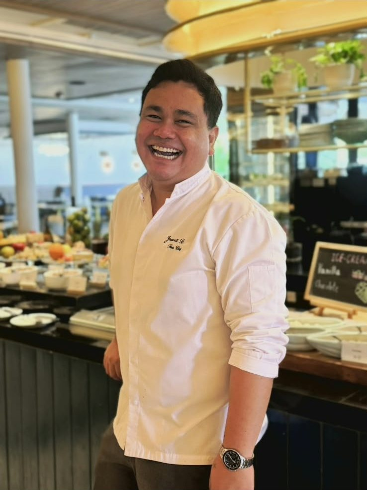
-
Jul 2025 — Present
Phulay Bay, a Ritz-Carlton ReserveSous Chef · In charge of Executive Chef
- Lead culinary operations across several luxury dining outlets at a Michelin Key resort.
- Manage a brigade of 54 chefs and kitchen professionals.
- Work with Executive Chef Christian Herrgesell on menus and culinary innovation.
- Served as in-charge Executive Chef during leadership transitions.
- Contributed to Sritrang Restaurant’s place among Thailand’s Top 25 Restaurants.
-
Sep 2023 — Jul 2025
Hyatt Regency Phuket ResortSous Chef
- Ran culinary operations across All-Day Dining, Pool Bar, In-Room Dining, Regency Club and Banquets.
- Led and developed a team of 26 professionals.
- Directed premium banquet catering and large-scale events.
-
Mar 2023 — Aug 2023
Phuket Marriott Resort & Spa, Nai Yang BeachJunior Sous Chef
- Delivered international cuisine standards and premium guest dining experiences.
-
Dec 2020 — Feb 2023
Chef’s House Private Chef’s TableCo-Founder & Owner Chef
- Founded a private Chef’s Table concept in Krabi with seasonal tasting menus inspired by European, Italian and Asian cuisines.
- Built customer loyalty through personal luxury dining.
Your menu, your kitchen, raised.
Menu development, recipe standardization, food cost control and team training for independent restaurants and cafés across Thailand.
Who is Chef Chris?
Jirawat Boonsit, known as Chef Chris, is a Thai chef with more than ten years in luxury hospitality and a Sous Chef at Phulay Bay, a Ritz-Carlton Reserve.
Is Phulay Bay Michelin recognized?
Yes. Phulay Bay, a Ritz-Carlton Reserve, holds MICHELIN 3 Keys for 2024, 2025 and 2026.
What is his cooking style?
Refined European technique with Southern Thai inspiration, plated with the discipline of Michelin Key luxury dining.
Does he take consulting work?
Yes. He advises restaurants and cafés on menus, kitchen systems, food cost and team training.
How do I reach him?
By email or phone using the details below, or through LinkedIn.